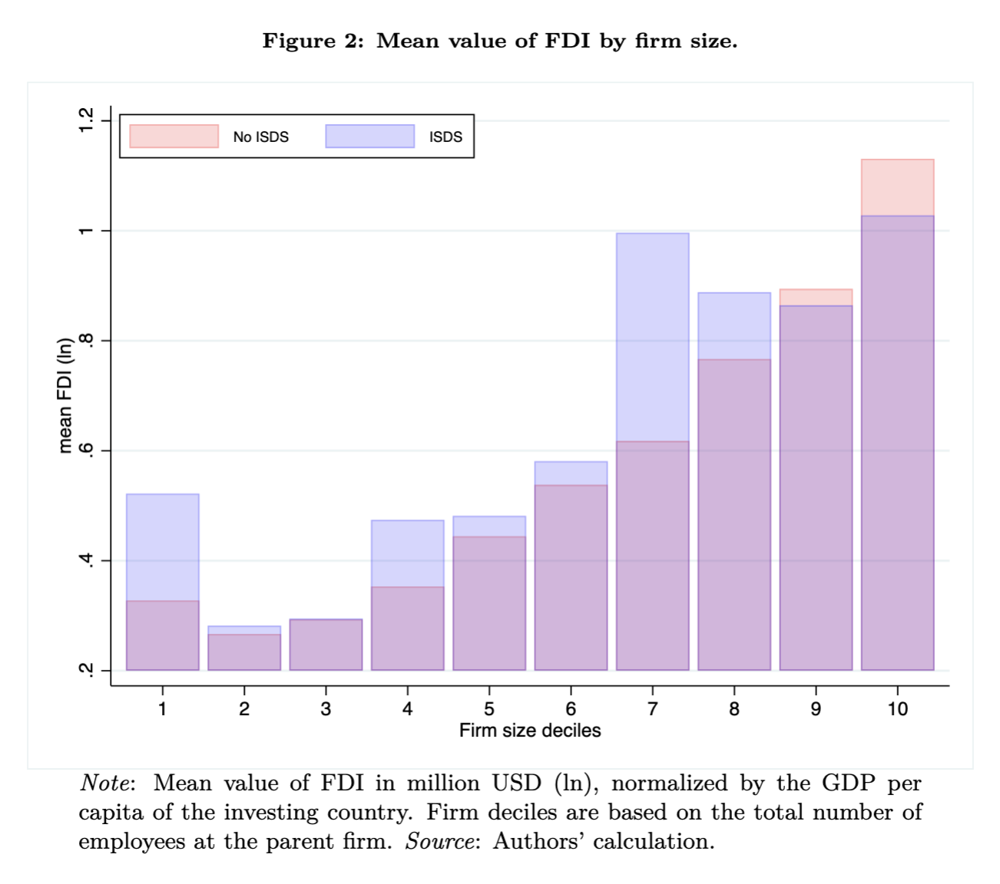
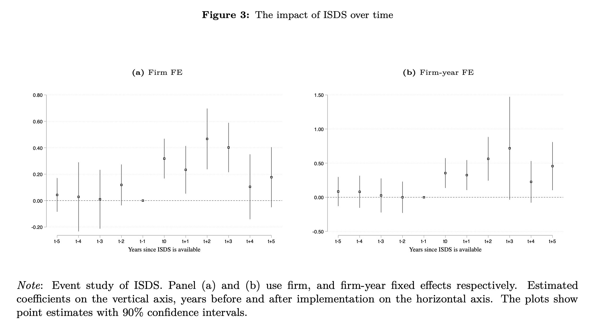
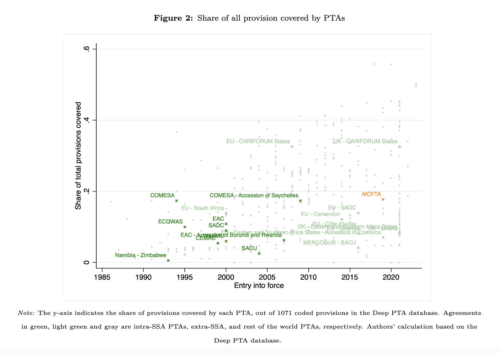
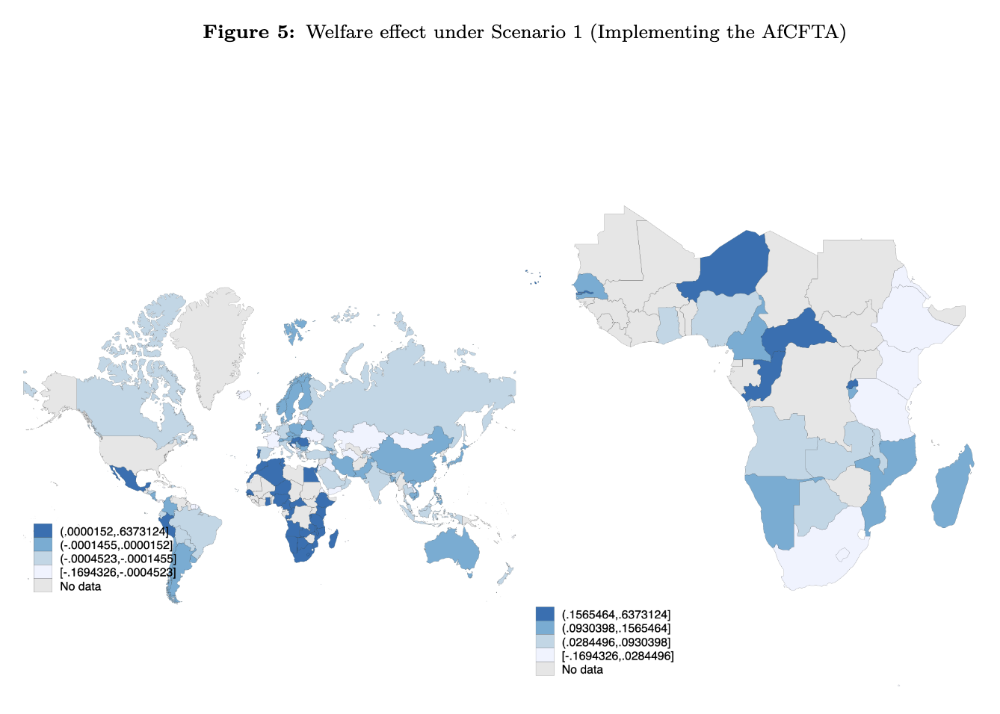

Current research projects
Investor-State Dispute Settlement Mechanism and the Margins of Firms' FDI, Job Market paper
Read abstract
Abstract: This paper investigates the impact of investor-state dispute settlement (ISDS) mechanisms on firms' foreign direct investment (FDI), focusing on their role in mitigating policy uncertainty and expropriation risk. Constructing a unique firm-level dataset covering FDI stocks across 130 countries from 2000 to 2021, we find that ISDS provisions included in trade agreements are associated with a 29% increase in parent firms’ investment in subsidiaries located in signatory countries. Notably, we show that ISDS has an even greater positive effect on investment during periods of high policy uncertainty, as indicated by election timing and country-risk indicators. These findings are robust to controlling for bilateral investment treaties, the depth of trade agreements, as well as other provisions. Consistent with the model predictions, we find that the influence of ISDS operates along both the extensive and intensive margins of investment. Finally, we find that the largest firms benefit the most from ISDS mechanisms, given their ability to absorb the costs of filing a potential claim.
LSEG Data extraction code example


Beneath the Surface : Deep Trade Agreements and the Potential of a Deeper AfCFTA, joint with L.Fontagné, J-C. Maur, N. Rocha & G.Santoni
Read abstract
Abstract: This paper examines what makes some trade agreements more effective at promoting trade than others and applies this question to the case of the African continent. The analysis uses a clustering algorithm to classify worldwide trade agreements into three categories and estimates their trade effects within a structural gravity framework. This allows ranking clusters according to their estimated trade effects as shallow, medium, and deep. The analysis then uses feature-attribution methods and counterfactual policy combinations to identify the provisions and policy configurations most strongly associated with deep classification and applies this approach to the African Continental Free Trade Area. The ambition of this agreement is to harmonize existing regional agreements into a single continent-wide market: it is currently classified as medium in this paper's baseline. The general-equilibrium counterfactual analysis shows that, if implemented as a deep agreement, the African Continental Free Trade Area would generate substantial additional trade gains, along with an average gross domestic product gain of 0.7 percent for the African economies in the sample. The classification analysis further indicates that tighter disciplines on trade-defense instruments, stronger legal enforceability, and visa-related provisions are among the policies most closely associated with deep agreements.


>WB working paper<
Bilateral Trade Exposure and Risk: the Role of Deep Trade Agreements, joint with N. Rocha
Read abstract
Abstract: This paper investigates the effect of bilateral trade exposure on the signature of trade agreements and their depth. First, it classifies trade agreements into three different depth types, depending on the frequency of legally enforceable provisions they include: WTO+, agreements covering solely WTO disciplines; WTO-X (Core provisions), agreements going beyond WTO disciplines and covering Competition policy, Investment, IP rights, and Capital movement provisions; and WTO-X (Progressive), agreements covering areas beyond trade such as environment, labor markets, and visa regulation. Next, it explores how the decision to sign these agreements intertwines with trade exposure and perceived risk in the partner country. Results highlight that the more exposed a country is vis-à-vis a partner in terms of intermediary inputs (i.e., through both direct and indirect trade), the more likely it is to sign an agreement. Specifically, a 10% increase in the import exposure index increases the probability of signing a WTO-X (Core provisions), and a WTO-X (Progressive) and WTO+ agreement by 50%, 27%, and 1.4% respectively. The overall impact of exposure on PTA signing is magnified when the sourcing country is considered politically unstable or prone to military conflicts, especially for the WTO-X (Core provision) and WTO-X (Progressive) types.
Import Competition and Outsourcing to Individual Workers
Read abstract
Abstract: Firms facing higher import competition resort to adaptive strategies to maintain competitiveness. While previous literature focused on general labor effects and reallocation, little is known about self-employed workers. This paper aims to study import competition and outsourcing to solo self-employed. At the aggregate level (EU - NUTS) our preliminary findings reveal that regions facing intensified import competition from China exhibit higher self-employed workers relative to their total workforce, controlling for country, region, and industry characteristics. The next step is to disentangle whether firms are indeed replacing traditional employees with solo self-employed when facing financial hardship, using French administrative data.